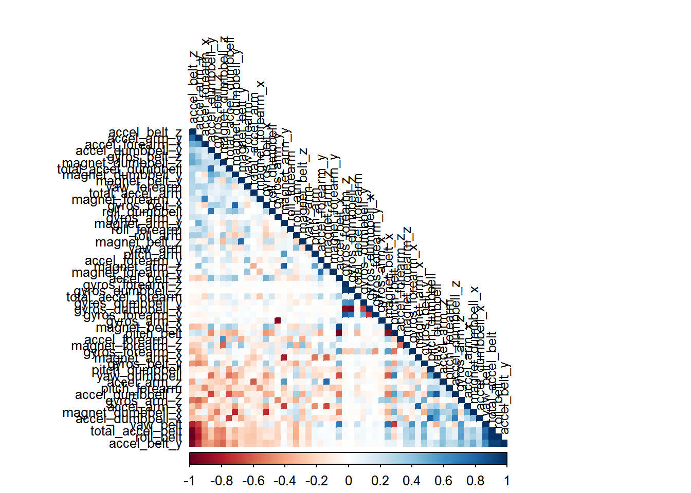

The goal of this project is to predict the manner in which a fitness exercise is performed. For this purpose, we use the datasets provided by http://groupware.les.inf.puc-rio.br/har to obtain and test a prediction model.
First we load the training and test sets provided:
trainData <- read.csv('pml-training.csv')
testData <- read.csv('pml-testing.csv')To get a view of the data we’re using to obtain the predictive model, we perform several exploratory analysis on the training set.
dim(trainData)## [1] 19622 160summary(trainData)
head(trainData)We observe that the dataset contains 19622 observations with 160 columns, being the outcome column “classe” the last one. Before we can use this data to build a prediction model, we have to reduce the number of predictors by preprocessing the data.
Let’s start by removing the columns with irrelevant information:
irrelevantCol <- c(
"X","user_name","raw_timestamp_part_1","raw_timestamp_part_2",
"cvtd_timestamp","new_window", "num_window")
trainDataProcessed <- trainData[,!(names(trainData) %in% irrelevantCol)]
testDataProcessed <- testData[,!(names(testData) %in% irrelevantCol)]
dim(trainDataProcessed)## [1] 19622 153Now let’s remove the non numeric columns (except for the “classe”):
numericCol <- sapply(trainDataProcessed[,-153], is.numeric)
trainDataProcessed <- trainDataProcessed[ , numericCol]
testDataProcessed <- testDataProcessed[ , numericCol]
dim(trainDataProcessed)## [1] 19622 120There are still 119 predictors, so we remove the ones with NA values:
trainDataProcessed <- trainDataProcessed[,(colSums(is.na(trainDataProcessed)) == 0)]
testDataProcessed <- testDataProcessed[,(colSums(is.na(testDataProcessed)) == 0)]
dim(trainDataProcessed)## [1] 19622 53Now we have 52 predictors. Let’s try to reduce the set even more by removing highly correlated variables. First we plot the correlation matrix:
library(caret)
library(corrplot)correlationMatrix <- cor(trainDataProcessed[, -53])
corrplot(
correlationMatrix, order = "FPC", method = "color", type = "lower",
tl.cex = 0.8, tl.col = rgb(0, 0, 0))
We observe some dark points (with high negative and positive correlation), which mean they don’t add much information to our model. Let’s remove those with a correlation coefficient higher than 0.90:
correlatedCol <- findCorrelation(correlationMatrix, cutoff = .90)
trainDataProcessed <- trainDataProcessed[,-correlatedCol]
testDataProcessed <- testDataProcessed[,-correlatedCol]
dim(trainDataProcessed)## [1] 19622 46With this the number of columns is reduced to 46 (45 predictors and the outcome). We can now create the predictor model.
We have a large dataset and still many predictors. Random Forests provide good performance under these conditions, so that’s the algorithm we select to build our prediction model.
First we split the training set to obtain the actual model training set and a validation set:
set.seed(12345)
splitIndex <- createDataPartition(
y=trainDataProcessed$classe, p=0.6, list=FALSE)
modelTrainData <- trainDataProcessed[splitIndex,];
modelValData <- trainDataProcessed[-splitIndex,]Now we train the classifier using random forests with 3-fold cross-validation
ctrl <- trainControl(method="cv", number=3)
set.seed(12345)
model <- train(classe ~ ., data=modelTrainData, method="rf", trControl=ctrl)To understand our model, let’s take a look to the most important predictors:
varImp(model, scale = FALSE)## rf variable importance
##
## only 20 most important variables shown (out of 45)
##
## Overall
## yaw_belt 973.8
## pitch_forearm 793.8
## pitch_belt 663.5
## magnet_dumbbell_z 630.4
## magnet_dumbbell_y 491.9
## magnet_belt_y 433.8
## roll_forearm 429.5
## gyros_belt_z 303.4
## magnet_belt_z 284.1
## magnet_dumbbell_x 271.0
## accel_dumbbell_y 255.3
## roll_dumbbell 250.4
## accel_forearm_x 231.3
## accel_dumbbell_z 201.3
## magnet_belt_x 199.0
## accel_forearm_z 194.0
## total_accel_belt 175.1
## total_accel_dumbbell 170.4
## magnet_forearm_z 169.6
## yaw_arm 153.0Most predictors are quite relevant, which means the preprocessing was correct.
Now we use the validation data to measure the performance of our prediction model:
confusionMatrix(predict(model, newdata=modelValData), modelValData$classe)## Confusion Matrix and Statistics
##
## Reference
## Prediction A B C D E
## A 2229 10 0 0 0
## B 3 1501 8 0 0
## C 0 7 1357 18 2
## D 0 0 3 1266 4
## E 0 0 0 2 1436
##
## Overall Statistics
##
## Accuracy : 0.9927
## 95% CI : (0.9906, 0.9945)
## No Information Rate : 0.2845
## P-Value [Acc > NIR] : < 2.2e-16
##
## Kappa : 0.9908
## Mcnemar's Test P-Value : NA
##
## Statistics by Class:
##
## Class: A Class: B Class: C Class: D Class: E
## Sensitivity 0.9987 0.9888 0.9920 0.9844 0.9958
## Specificity 0.9982 0.9983 0.9958 0.9989 0.9997
## Pos Pred Value 0.9955 0.9927 0.9805 0.9945 0.9986
## Neg Pred Value 0.9995 0.9973 0.9983 0.9970 0.9991
## Prevalence 0.2845 0.1935 0.1744 0.1639 0.1838
## Detection Rate 0.2841 0.1913 0.1730 0.1614 0.1830
## Detection Prevalence 0.2854 0.1927 0.1764 0.1622 0.1833
## Balanced Accuracy 0.9984 0.9935 0.9939 0.9917 0.9978We got a high accuracy, close of 99% and a model error of 1%.
Finally we get the predictions for the test dataset provided:
testPredictions <- predict(model, newdata=testDataProcessed)
testPredictions## [1] B A B A A E D B A A B C B A E E A B B B
## Levels: A B C D EThe predictor model built with random forests and cross validation over the HAR weight lifting exercises dataset allows to determine with a high accuracy the way in which an exercise was performed.